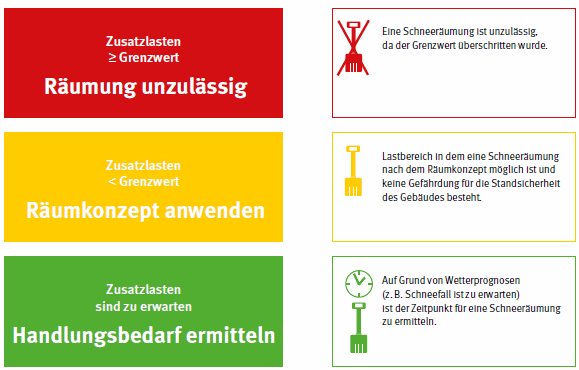

Grundlage für die Beurteilung der Notwendigkeit der Schneeräumung sind die Lastannahmen im Rahmen der Standsicherheitsberechnung des Bauwerkes bei der Planung. Später kann jedoch der tatsächliche Zustand des Gebäudes maßgeblich sein.
Die Standsicherheit von Bauwerken und die Tragfähigkeit von Dächern werden durch statische Berechnungen nachgewiesen. Die hierzu erforderlichen Lastannahmen sind in Normen geregelt. Für Schnee- und Eislasten gilt die DIN EN 1991-1-3/NA: 2010-12 Eurocode 1: Einwirkungen auf Tragwerke – Teil 1-3: allgemeine Einwirkungen - Schneelasten. Diese Norm beinhaltet Angaben über natürliche Schneelasten in Abhängigkeit der verschiedenen Dachformen. Ebenso werden Anhäufungen durch Schneeverwehungen berücksichtigt. Des Weiteren werden Schneelastzonen abhängig von der geografischen Lage innerhalb Deutschlands beschrieben. Die Werte für diese Zonen sind langjährig ermittelte Durchschnittswerte. Sie können durch tatsächliche Schneeereignisse überschritten werden. Außerdem werden zusätzliche Lasten, die sich durch die Schneeräumung ergeben (Schneeanhäufungen durch Umverteilen, Räumungsgerätschaften etc.), nicht berücksichtigt. Dies sollte bei den Bemessungen zukünftiger Bauwerke jedoch mit beachtet werden.
Die statischen Berechnungen für das Bauwerk sind für Schneeräumungsarbeiten auf Dächern eine wesentliche Grundlage. Sie dokumentieren das statische System und den Sollzustand zum Zeitpunkt der Errichtung des Bauwerkes. Während der Lebensdauer eines Bauwerkes können sich die Lastannahmen aufgrund neuerer Erkenntnisse, des Klimawandels usw. verändern. Darüber hinaus könnte das Bauwerk abweichend von der Planung errichtet oder nach der Fertigstellung verändert worden sein.
Für die Beurteilung einer notwendigen Schneeräumung sind zunächst Kenntnisse über den aktuellen Zustand der Standsicherheit des Bauwerkes unbedingt erforderlich. Liegen diese Kenntnisse nicht vor, kann die Ermittlung der Standsicherheit entsprechend der VDI Richtlinie 6200 erfolgen. Unter Berücksichtigung des aktuellen statischen Gebäudezustandes kann dann die maximale/zulässige Zusatzlast bestimmt werden, die die Standsicherheit des Gebäudes nicht gefährdet. Als Zusatzlast wird hier die Summe der ermittelten Schneelast und den veranschlagten Verkehrslasten bezeichnet. Verkehrslasten sind zum Beispiel Maschinen, Personal und Schneeanhäufungen, die sich aus der Räumung ergeben können. Die Bewertung kann aber auch zur Notwendigkeit einer Verstärkung der Dachkonstruktion führen, wenn die zu erwartende Zusatzlast die Standsicherheit gefährdet. Wird die zulässige Zusatzlast überschritten ist die Standsicherheit gefährdet. Ab diesem Zeitpunkt darf das Dach nicht mehr betreten werden. Personen dürfen sich nicht im Gebäude aufhalten.
Die Bestimmung des aktuellen Zustandes des Gebäudes und die für die Durchführung der Schneeräumung erforderlichen statischen Überprüfungen sind durch eine fachkundige Person durchzuführen. Zur sicheren Durchführung der Schneeräumung ist ein Grenzwert zu bestimmen, der im Rahmen der Gefährdungsbeurteilung für das Sicherheitskonzept zu ermitteln ist. Dieser ergibt sich aus der zulässigen Zusatzlast verringert um einen Sicherheitsbeiwert. Bis zu diesem Grenzwert ist eine Schneeräumung noch zulässig.

Abb. 4 Beurteilungsschema
|
|
|
Zusatzlast = ermittelte Schneelasten + veranschlagte Verkehrslasten Grenzwert = zulässige Zusatzlast x Sicherheitsbeiwert |